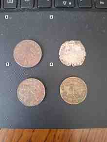
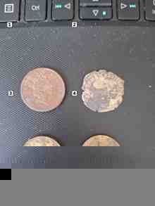

AI Coin Collection Scanner
Infographic handleiding: van duidelijke foto’s naar een controleerbare munteninventaris.
Leg de munten overzichtelijk neer
Leg munten plat op een rustige, egale achtergrond. Laat ruimte tussen de munten en zorg voor voldoende licht zonder harde schittering.
Maak eerst foto A
Fotografeer één zijde van alle munten. Probeer tekst, jaartal en details zo scherp mogelijk vast te leggen.

Draai om – maar verplaats niet
Draai iedere munt op zijn eigen plek om. Munt 1 blijft linksboven, munt 2 rechtsboven, munt 3 linksonder en munt 4 rechtsonder.

Nummer je fotoparen consequent
01a.jpg + 01v.jpg
02a.jpg + 02v.jpg
01-front.jpg + 01-back.jpg
Gebruik vooral één systeem en blijf daarbij.
Het groepsnummer maakt het later veel makkelijker om in Excel terug te vinden welke bronfoto bij een muntrecord hoort.
Upload het complete fotopaar
Upload de A- en V-foto van dezelfde groep. Controleer vóór analyse dat beide zijden aanwezig zijn en dat geen munt tussendoor is verwisseld.
Controleer de muntrecords zelf
Bekijk per record land, jaar, nominale waarde, type en beschrijving. Deze Beta helpt met inventariseren en referentieonderzoek, maar jij blijft de laatste controle uitvoeren.
- Kun jij een jaartal beter lezen dan de foto? Corrigeer het record.
- Is een munt erg afgesleten? Laat de identificatie liever onzeker dan dat je een verkeerd type kiest.
- Bij twijfel kunnen gewicht, diameter, materiaal en randtekst een groot verschil maken.
Gebruik de onderzoekskleur
Duidelijke reden voor verder onderzoek, bijvoorbeeld een herdenkingsmunt, historische munt/medaille of bekende variant.
De identificatie of exacte variant is nog niet volledig zeker. Extra gegevens kunnen nodig zijn.
Normale circulatiemunt zonder zichtbare bijzondere onderzoeks-trigger.
Let op: een onderzoekskleur is geen taxatie en geen garantie dat een munt zeldzaam of waardevol is.
Exporteer en bewaar Excel samen met de foto’s
Exporteer nadat je de records hebt gecontroleerd. Bewaar het Excel-bestand samen met de originele foto’s. Zo blijft de koppeling via fotonummers en bestandsnamen bruikbaar.
Extra tips die fouten voorkomen
- Fotografeer beide zijden in dezelfde sessie en ruim de munten pas daarna op.
- Houd dezelfde achtergrond en ongeveer dezelfde camera-afstand aan.
- Fotografeer zo recht mogelijk van boven.
- Gebruik liever geen digitale zoom; ga dichterbij en laat de camera scherpstellen.
- Maak bij slecht leesbare details een extra close-up, maar behoud het oorspronkelijke fotopaar.
- Poets oude of verzamelmunten niet om ze beter scanbaar te maken; reinigen kan oppervlak en verzamelwaarde aantasten.
- Originele verpakking, kaartjes of certificaten kunnen nuttige aanvullende herkomstinformatie zijn – fotografeer die mee.
- Bewaar originele bestandsnamen en verander niet halverwege van nummersysteem.
Snelle checklist vóór analyse
- Voor- en achterkant van dezelfde groep aanwezig
- Munten op beide foto’s op dezelfde positie
- Foto’s hebben hetzelfde groepsnummer
- Tekst en jaartallen zijn zo scherp mogelijk
- Geen munt ontbreekt of is verwisseld
- Originele foto’s blijven bewaard